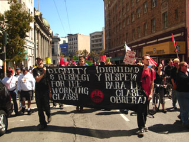

Organizing Today for the One Big Union Tomorrow - Bay Area IWW Contingent in Labor Day Action
Submitted on Sun, 09/10/2006 - 2:41pm
 By Dean Dempsey – Bay Area GMB Immigrant Outreach Committee
By Dean Dempsey – Bay Area GMB Immigrant Outreach Committee
To take part in the national day of action for immigrant and worker rights, the Bay Area Industrial Workers of the World participated as a supporting contingent to the march and rally in San Francisco, where several thousand turned out for the largest celebrated Labor Day in years.
The IWW was one of the predominate labor bodies there, with over 30 wobblies at some point in the contingent. The half-mile march began at the Embarcadero, then concluding at the San Francisco Civic Center.
Nationally, actions were also held in Alabama, Saint Paul, MN, Phoenix, AZ, Chicago, IL, and many other cities and states around the country.
In San Francisco, the event was organized by the Regional Unity Coalition, consisting of various immigrant-rights and grassroots organizations. The theme was, "Stop attacks on our communities," not only in a global context, but locally as well, encompassing the struggles of our own city, such as the displacement of working people of color in Bay View/Hunters Point.
The largest labor union present in the march was most likely UNITE HERE. The theme of San Francisco’s Labor Day action was chiefly centralized around the renewed efforts to better the lives and working conditions of hotel workers in the UNITE HERE North American campaign of “Hotel Workers Rising.” This campaign represents thousands of hotel workers who demand wage increases, decent pensions, a right for workers to choose a union, and, in light of the fact that hotel workers have a 40% higher injury rate that workers in the service sector, affordable healthcare and workplace protection.
As of last month, participating hotel workers in Local 2 voted overwhelmingly at 93% to allow union leadership the authorization to call another strike, if need be. That is well over 2,000 working people, most of whom are immigrants, women, and people of color. This intolerance has built from the 2004 contract expiration and consequent lockout of 4,300 hotel employees from over a dozen San Francisco hotels. Two years later, some 8,000 hotel workers are still without a contract and 13 local hotels remain under boycott, totaling $100 million in losses, according to union officials.
Although many IWW members support the efforts in “Hotel Workers Rising”, most would also acknowledge that such alliances between the IWW and minority communities doesn’t exist to the extent it should. As a labor union which seeks to create the “new society within the shell of the old,” we have to collectively determine what our role can be in the new movement for immigrant and worker rights, and how we go about organizing with such communities.
By participating as contingents, it is one step in demonstrating our support. It is also a method in which people can dialogue and learn what the One Big Union stands for and the world we envision. On the march, IWW member and immigrant organizer, Patricia Nuño, says,
“I was approached by folks curious about our bright red flags with the black IWW globe on them. It was a great opportunity to share IWW history and ideals, and inform them on actions we are currently engaged in. It was also a chance to significantly participate in solidarity with immigrants and their families.”
The immigrant rights movement is playing a fundamental role in United States labor, with a large portion of the working-class willing to fight, boycott, and as May 1st demonstrated, even strike in the belief that a worker knows no border and deserves the equal rights and privileges that only some workers have.
In theory, the IWW would be at the forefront of such discontent and readiness to fight, however in action, we find our words come short. Our efforts in these fields certainly are not nonexistent, but are rather works in progress with a lot more organizing to do.
Undoubtedly, we must continue and expand our current organizing, but also make the conscious effort to further diversify our union. As IWW contingent organizer, Sarah Zesmer says,
“I think it is important to keep our focus on organizing workers through solidarity and direct action unionism, but to continually develop in building ourselves in a context of other issues as part of a bigger, global, socioeconomic movement by and for working people.”
As we have learned before, forming these contingents is nothing short of useful and beneficial to us as a union. But we must also explore other ways, particularly workplace organizing, to welcome and include more women, immigrants, and people of color into the Industrial Workers of the World, diversifying our membership and reviving the Wobbly tradition of multi-lingual, ethnic and gendered representation. If the effort isn’t made, and the space for this isn’t created, we will find ourselves left behind in the sweeping movement we see today, the movement for unconditional empowerment and self-determination of every worker.